OTIUM is the practice of deliberate leisure. In the classical sense, otium is not escape from work but time when attention returns to memory, landscape, and thought — without a utilitarian deadline.
We shape routes for lingering, not for checklist tourism. The goal is presence in a place rather than consumption of sights.
OTIUM is not a tour operator. It is an invitation to walk, pause, and leave a route unfinished if the light on a façade deserves another minute.
Исторические и справочные гербы
Guide. Places in this edition: 12.
Бангкок (Крунг-Тхеп) — столица Таиланда и главный политический, экономический и культурный центр страны.
Основан как резиденция династии Чакри в XVIII веке, город вырос из сети каналов и храмовых комплексов в мегаполис региона. Буддийские святыни, королевская застройка и плотная застройка соседствуют с современной инфраструктурой.
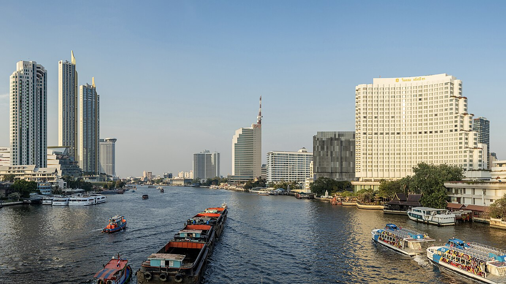
Orange-flag express boats skip-stop between old city wats and modern hotels—cheap deck seating with river breeze.
Canal city logistics moved toward motorised ferries as roads choked; river remains a commuter spine.
The scenic spine tying Wat Arun, Tha Tien, and Sathorn piers.
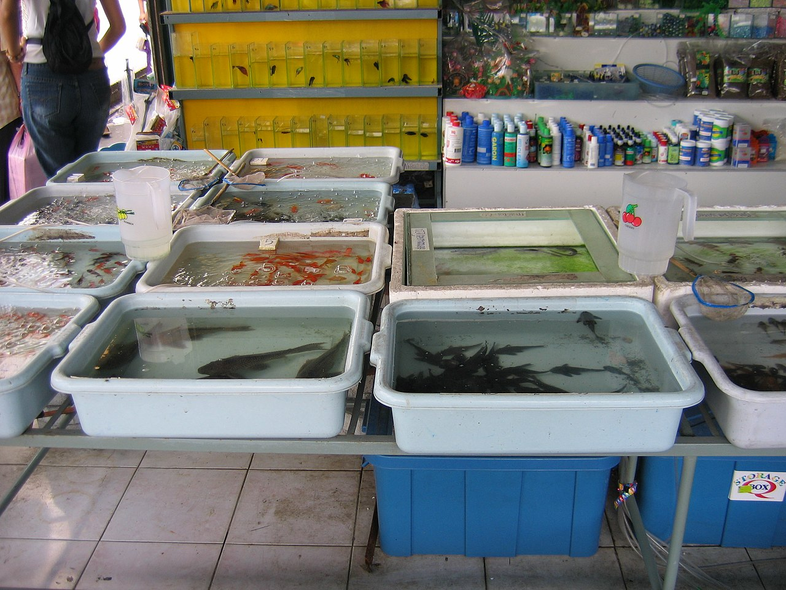
Massive weekend bazaar for plants, crafts, street food, and vintage clothing—section maps help avoid getting lost.
Grew from municipal flea markets into a national wholesale-retail hybrid with international tourist traffic.
Bangkok's most intense single-site shopping experience.
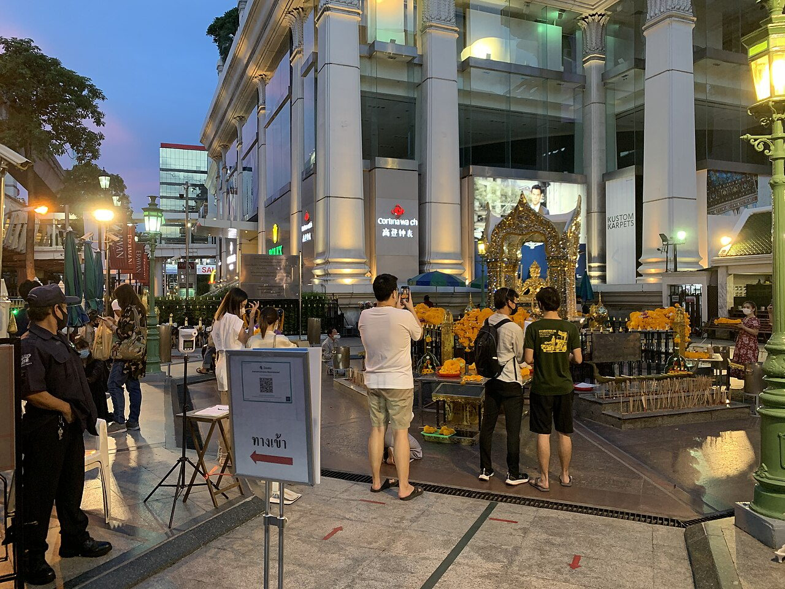
Busy corner shrine to Brahma where dancers offer thanks for answered prayers amid mall traffic.
Built to counter bad omens during the original Erawan Hotel construction.
Working shrine inside Bangkok's luxury retail crossroads.
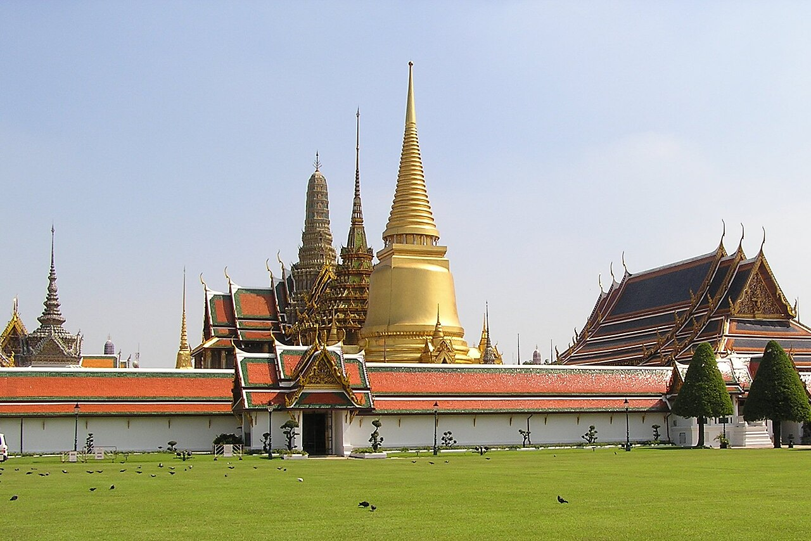
Walled precinct of throne halls, royal offices, and Wat Phra Kaew with the Emerald Buddha. Strict dress code at gates.
Rama I moved the capital across the river; successive kings expanded pavilions and mural galleries.
Thailand's foremost royal and religious ensemble in the old island city.
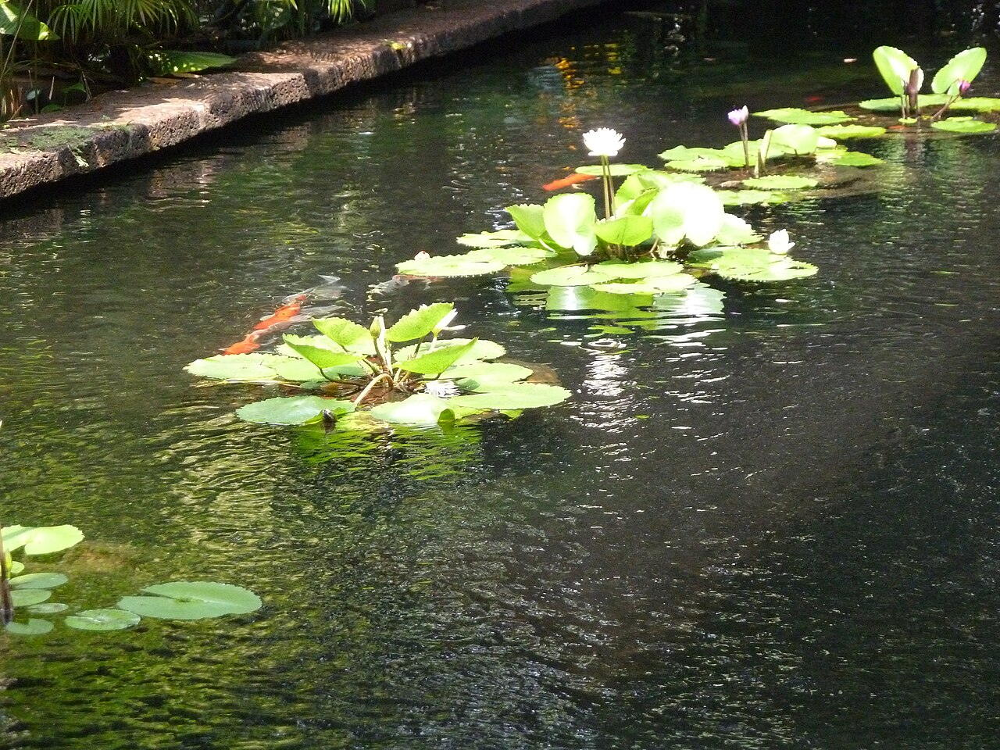
Silk merchant's preserved home displaying Southeast Asian art and Thai craft rooms.
Thompson collected panels from upcountry houses before his 1967 Malaysia trip.
Accessible introduction to Thai domestic architecture downtown.
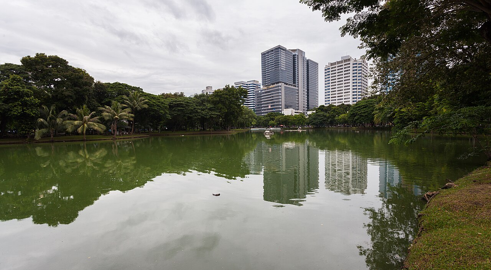
Central green with monitor lizards, paddle boats, and dawn jogging loops around the lake.
Named after Lumbini in Nepal; land was royal before public opening.
Primary breathing space between Silom and Sukhumvit office belts.
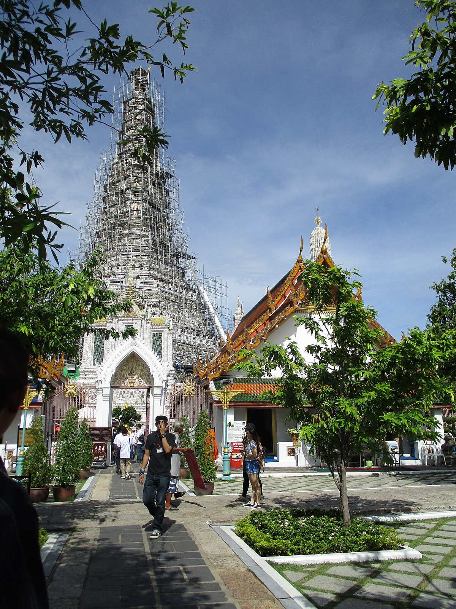
Steep central prang decorated with floral china shards, best photographed at sunset from opposite river piers.
Named for the dawn glow on its tiles; Rama II-era expansion created the tall Khmer-style tower visitors climb.
Thonburi shore's vertical exclamation opposite the Grand Palace.
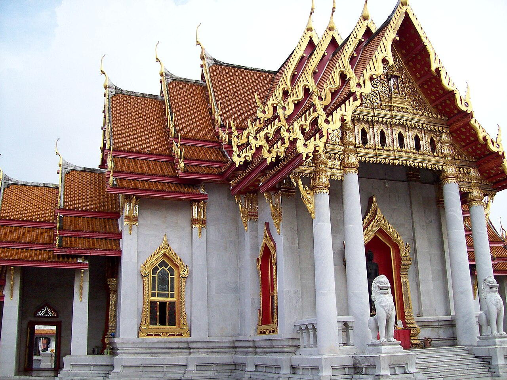
Ordination hall with European marble and stained glass yet Thai cruciform plan.
Rama V commissioned a modern royal wat using imported stone and skilled Italian carvers.
Classic postcard temple away from riverside crowds.
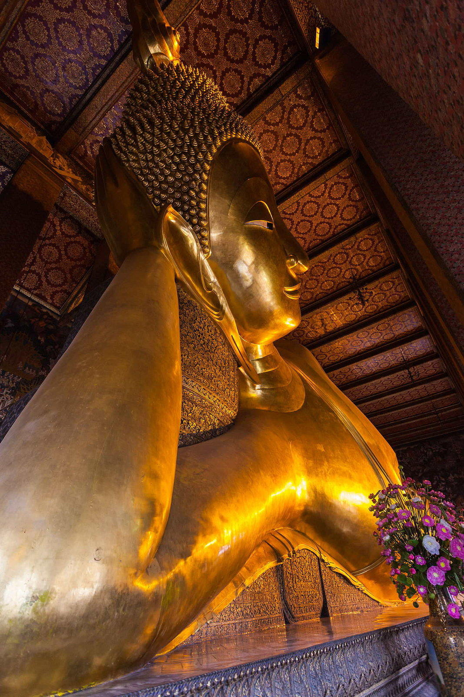
Giant reclining Buddha in gold leaf with mother-of-pearl feet; campus famous for Thai massage school and chedi rows.
Rama I enlarged an older wat; Rama III added encyclopaedic stupas of Buddhist cosmology.
UNESCO Memory of the World inscription for stone inscriptions on site.
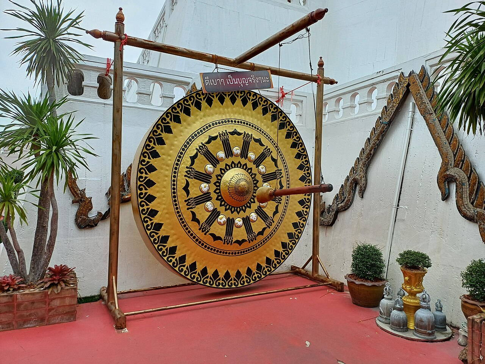
Golden chedi atop a man-made hill with spiral ramp; views over Rattanakosin old city.
Monks carried soil in sacks to raise the drum-shaped reliquary above flood-prone ground.
Landmark hill visible from many downtown streets.
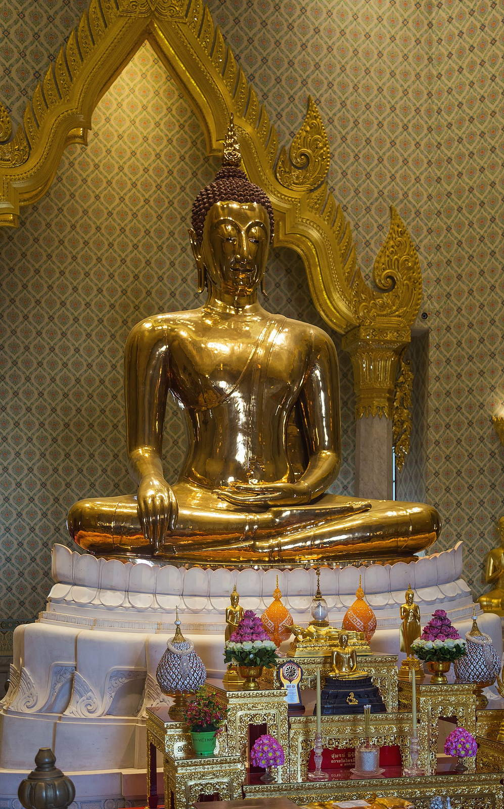
Five-and-a-half tonne solid gold Buddha revealed when a stucco casing cracked during moving.
The figure was disguised for centuries before rediscovery in the 1950s.
Chinatown's spiritual and tourist anchor.
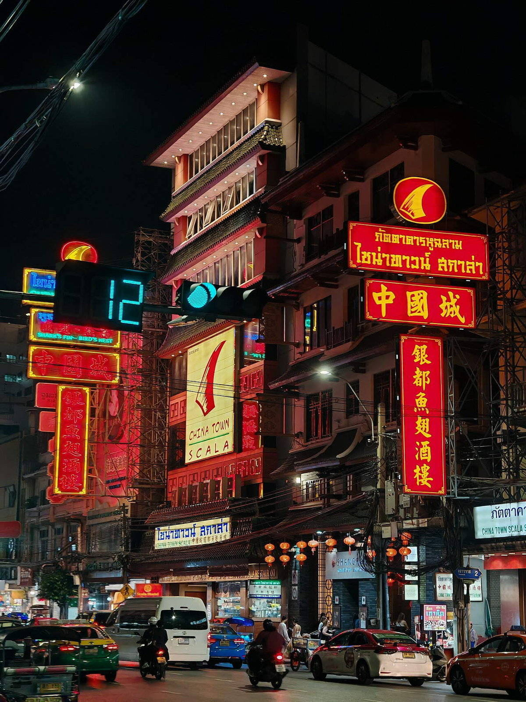
Night market street for bird's nest soup, seafood queues, and gold shops under bilingual signs.
Teochew traders expanded a canal-side lane into a neon gastronomy spine.
Bangkok's densest evening food theatre.